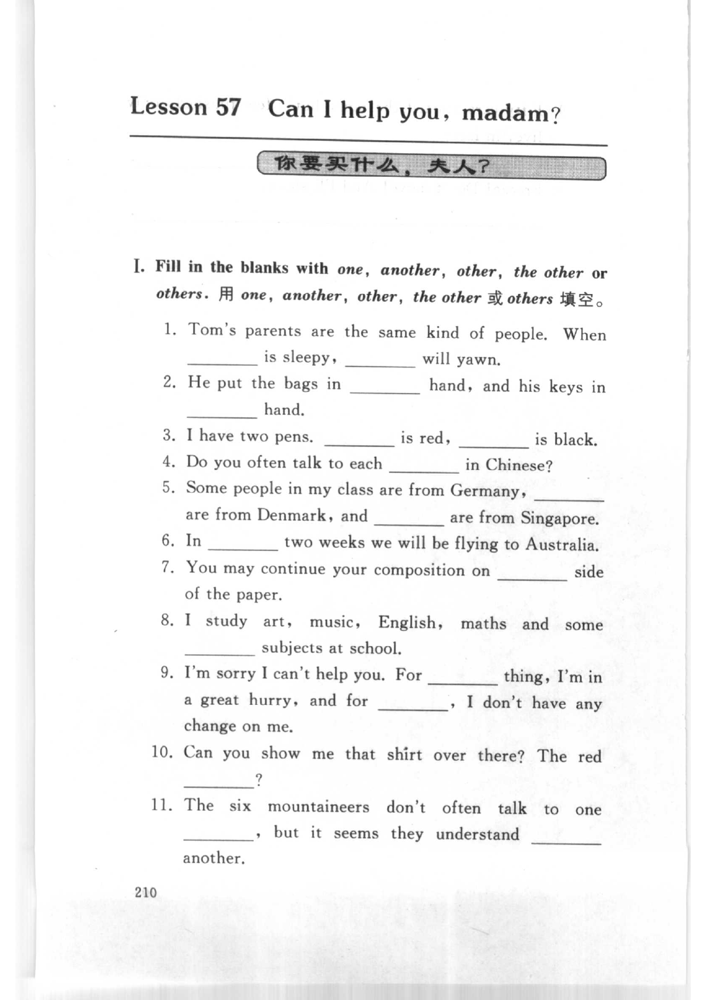
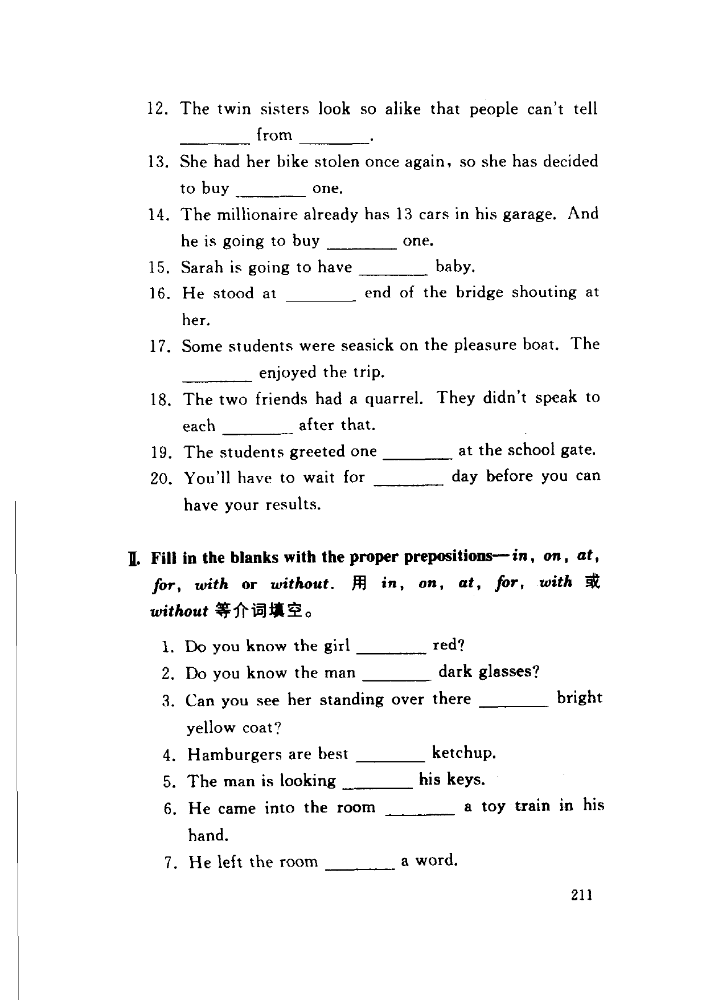
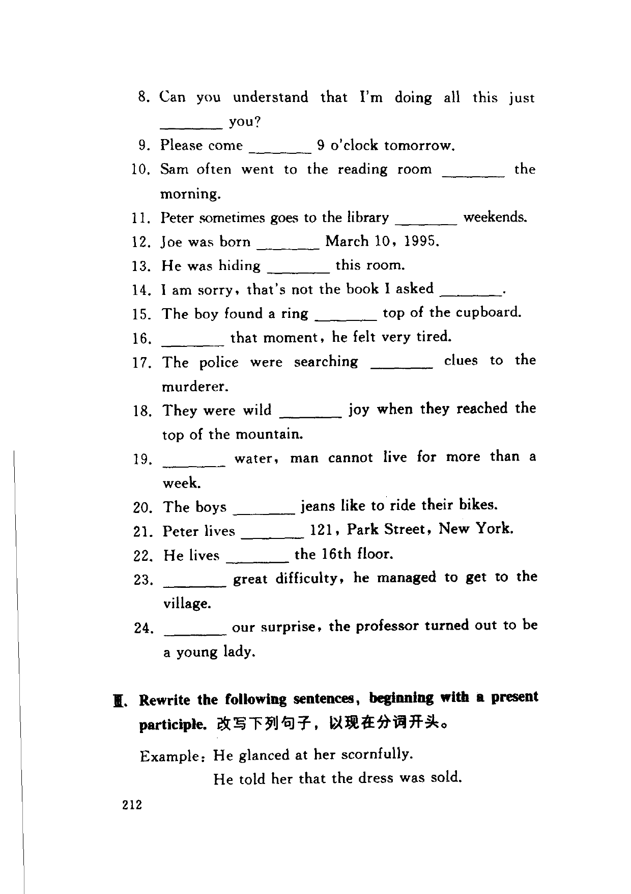
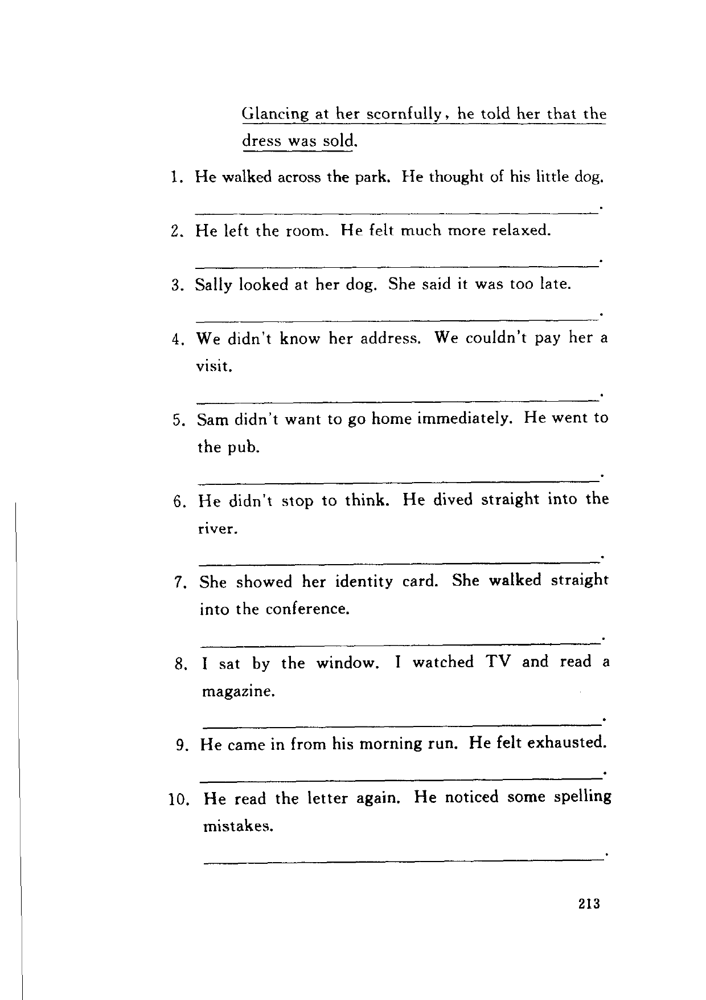

Grammar exercises · 语法练习
I. Fill in the blanks with one, another, other, the other or others.
用 one, another, other, the other 或 others 填空。
-
I. one / another / other / the other / others — Tom's parents are the same kind of people. When is sleepy, will yawn.
-
I. one / another / other / the other / others — He put the bags in hand, and his keys in hand.
-
I. one / another / other / the other / others — I have two pens. is red, is black.
-
I. one / another / other / the other / others — Do you often talk to each in Chinese?
-
I. one / another / other / the other / others — Some people in my class are from Germany, are from Denmark, and are from Singapore.
-
I. one / another / other / the other / others — In two weeks we will be flying to Australia.
-
I. one / another / other / the other / others — You may continue your composition on side of the paper.
-
I. one / another / other / the other / others — I study art, music, English, maths and some subjects at school.
-
I. one / another / other / the other / others — I'm sorry I can't help you. For thing, I'm in a great hurry, and for , I don't have any change on me.
-
I. one / another / other / the other / others — Can you show me that shirt over there? The red ?
-
I. one / another / other / the other / others — The six mountaineers don't often talk to one , but it seems they understand another.
-
I. one / another / other / the other / others — The twin sisters look so alike that people can't tell from .
-
I. one / another / other / the other / others — She had her bike stolen once again, so she has decided to buy one.
-
I. one / another / other / the other / others — The millionaire already has 13 cars in his garage. And he is going to buy one.
-
I. one / another / other / the other / others — Sarah is going to have baby.
-
I. one / another / other / the other / others — He stood at end of the bridge shouting at her.
-
I. one / another / other / the other / others — Some students were seasick on the pleasure boat. The enjoyed the trip.
-
I. one / another / other / the other / others — The two friends had a quarrel. They didn't speak to each after that.
-
I. one / another / other / the other / others — The students greeted one at the school gate.
-
I. one / another / other / the other / others — You'll have to wait for day before you can have your results.
II. Fill in the blanks with the proper prepositions — in, on, at, for, with or without.
用 in, on, at, for, with 或 without 等介词填空。
-
II. in / on / at / for / with / without — Do you know the girl red?
-
II. in / on / at / for / with / without — Do you know the man dark glasses?
-
II. in / on / at / for / with / without — Can you see her standing over there bright yellow coat?
-
II. in / on / at / for / with / without — Hamburgers are best ketchup.
-
II. in / on / at / for / with / without — The man is looking his keys.
-
II. in / on / at / for / with / without — He came into the room a toy train in his hand.
-
II. in / on / at / for / with / without — He left the room a word.
-
II. in / on / at / for / with / without — Can you understand that I'm doing all this just you?
-
II. in / on / at / for / with / without — Please come 9 o'clock tomorrow.
-
II. in / on / at / for / with / without — Sam often went to the reading room the morning.
-
II. in / on / at / for / with / without — Peter sometimes goes to the library weekends.
-
II. in / on / at / for / with / without — Joe was born March 10, 1995.
-
II. in / on / at / for / with / without — He was hiding this room.
-
II. in / on / at / for / with / without — I am sorry, that's not the book I asked .
-
II. in / on / at / for / with / without — The boy found a ring top of the cupboard.
-
II. in / on / at / for / with / without — that moment, he felt very tired.
-
II. in / on / at / for / with / without — The police were searching clues to the murderer.
-
II. in / on / at / for / with / without — They were wild joy when they reached the top of the mountain.
-
II. in / on / at / for / with / without — water, man cannot live for more than a week.
-
II. in / on / at / for / with / without — The boys jeans like to ride their bikes.
-
II. in / on / at / for / with / without — Peter lives 121, Park Street, New York.
-
II. in / on / at / for / with / without — He lives the 16th floor.
-
II. in / on / at / for / with / without — great difficulty, he managed to get to the village.
-
II. in / on / at / for / with / without — our surprise, the professor turned out to be a young lady.
III. Rewrite the following sentences, beginning with a present participle.
改写下列句子，以现在分词开头。
Example: He glanced at her scornfully.
He told her that the dress was sold.
Glancing at her scornfully, he told her that the dress was sold.
-
III. Present participle — He walked across the park. He thought of his little dog.
-
III. Present participle — He left the room. He felt much more relaxed.
-
III. Present participle — Sally looked at her dog. She said it was too late.
-
III. Present participle — We didn't know her address. We couldn't pay her a visit.
-
III. Present participle — Sam didn't want to go home immediately. He went to the pub.
-
III. Present participle — He didn't stop to think. He dived straight into the river.
-
III. Present participle — She showed her identity card. She walked straight into the conference.
-
III. Present participle — I sat by the window. I watched TV and read a magazine.
-
III. Present participle — He came in from his morning run. He felt exhausted.
-
III. Present participle — He read the letter again. He noticed some spelling mistakes.
Original images · 原图对照
Expand a page to compare it with the transcription. Open the original in a new tab to zoom in.
展开原图核对文字，也可以在新标签页打开原图放大查看。
Book page 210 · Exercise I (one / another / other / the other / others, items 1–11)
Open original · 打开原图 ↗ Download original · 下载原图


Book page 211 · Exercise I (items 12–20) and Exercise II (prepositions in, on, at, for, with, without, items 1–7)
Open original · 打开原图 ↗ Download original · 下载原图


Book page 212 · Exercise II (items 8–24) and Exercise III (present participle rewrite, example and items 1–2)
Open original · 打开原图 ↗ Download original · 下载原图


Book page 213 · Exercise III (items 1–10)
Open original · 打开原图 ↗ Download original · 下载原图


Your notes and answers
Use this space for longer responses or exercises that do not have an individual answer box.